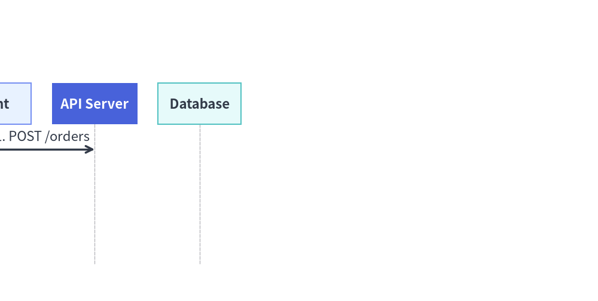

Animating Technical Diagrams & Auto-Layout Graphs
All 6 technical diagram engines (FlowDiagram, ArchitectureDiagram, SequenceDiagram, StateDiagram, ClassDiagram, ERDiagram) and all 5 auto-layout graph solvers (ArchitectureGraph, LayerGraph, TreeGraph, RadialGraph, GridGraph) use Pattern B (Pre-Build & Mutate):
- Construct the entire topology once outside the animation loop and keep references to the returned nodes and connections.
- Inside
with anim.frame():, mutate.show,.style,.text_style, or.draw_ratio, and calldraw(xy=..., scale=...).
1. Key Animation Capabilities on Diagrams
| Feature | How It Works |
|---|---|
Visibility & Automatic Edge Hiding (.show) |
Setting node.show = False hides the node and automatically hides all edges connected to it. For Junction points in FlowDiagram / ArchitectureDiagram, the upstream wire entering the junction stays hidden until at least one downstream target is visible. |
Dynamic Style Mutation (.style, .text_style) |
Reassign node.style = Styles.PrimaryFlat or edge.style = Styles.PrimaryBold between frames to highlight active execution paths. |
Progressive Line Growth (edge.draw_ratio) |
All connection objects (Edge, Transition, Relationship, Message, Junction) support draw_ratio: float (0.0 to 1.0) and draw_direction: Literal["forward", "backward"] to animate arrows growing across the canvas. |
Camera Pan & Zoom (draw(xy=..., scale=...)) |
Passing xy=(ox, oy) and scale=s to d.draw() translates and scales all coordinates, dimensions, and font sizes uniformly. |
2. Progressive Node & Arrow Walkthrough (FlowDiagram)
By combining node.show, edge.draw_ratio, and node.style mutation, you can animate a request flowing through a pipeline step by step:
from drawlib.anim import Animation
from drawlib.canvas import save, setup
from drawlib.diagrams.flow import End, FlowDiagram, Process, Start
from drawlib.styles import Styles
setup(width=115, height=38)
anim = Animation(fps=8.0)
# 1. Build topology once outside the loop
flow = FlowDiagram(node_style=Styles.Neutral, edge_style=Styles.DarkBold, edge_text_style=Styles.Dark)
n1 = flow.add(Start("Request", width=22, height=12), xy=(20, 19))
n2 = flow.add(
Process("Authorize", width=26, height=13, style=Styles.PrimaryFlat, text_style=Styles.WhiteBold),
xy=(57, 19),
show=False,
)
n3 = flow.add(
End("200 OK", width=22, height=12, style=Styles.SecondaryNeutral, text_style=Styles.DarkBold),
xy=(95, 19),
show=False,
)
e1 = n1.connect(n2)
e2 = n2.connect(n3)
# 2. Frame 1: Initial entry point
with anim.frame(duration=0.6):
flow.draw()
# 3. Reveal Authorize node and grow arrow e1
n2.show = True
for r in [0.35, 0.7, 1.0]:
with anim.frame(duration=0.14):
e1.draw_ratio = r
flow.draw()
# 4. Settle Authorize into PrimaryNeutral, reveal 200 OK, and grow arrow e2
n2.style = Styles.PrimaryNeutral
n2.text_style = Styles.DarkBold
n3.show = True
for r in [0.35, 0.7, 1.0]:
with anim.frame(duration=2.5 if r == 1.0 else 0.14):
e2.draw_ratio = r
flow.draw()
save()
3. Camera Pan & Zoom (draw(xy=..., scale=...))
Every diagram's draw(xy=(x, y), scale=s) method shifts the diagram origin to (x, y) and multiplies all coordinates, box sizes, line widths, and font sizes by scale. This makes it easy to create smooth slide-in or zoom transitions:
from drawlib.anim import Animation
from drawlib.canvas import save, setup
from drawlib.diagrams.sequence import Participant, SequenceDiagram
from drawlib.styles import Styles
setup(width=115, height=58)
anim = Animation(fps=10.0)
seq = SequenceDiagram(
node_style=Styles.Primary,
node_text_style=Styles.DarkBold,
edge_style=Styles.DarkBold,
edge_text_style=Styles.Dark,
node_card_style=Styles.Neutral,
autonumber=True,
)
client = seq.add(Participant((20, 9), "Client", card_style=Styles.PrimaryNeutral, text_style=Styles.DarkBold))
api = seq.add(Participant((20, 9), "API Server", card_style=Styles.PrimaryFlat, text_style=Styles.WhiteBold))
db = seq.add(Participant((20, 9), "Database", card_style=Styles.SecondaryNeutral, text_style=Styles.DarkBold))
m1 = client.request(api, "POST /orders")
m2 = api.request(db, "INSERT order", show=False)
m3 = api.reply(client, "201 Created", show=False)
# Phase 1: Slide in from left
for ox in [-15, -8, -3, 0]:
with anim.frame(duration=0.1):
seq.draw(xy=(ox, 0), scale=1.0)
# Phase 2: Reveal remaining messages with progressive draw_ratio
m2.show = True
for r in [0.5, 1.0]:
m2.draw_ratio = r
with anim.frame(duration=0.15):
seq.draw()
m3.show = True
for r in [0.5, 1.0]:
m3.draw_ratio = r
with anim.frame(duration=2.5 if r == 1.0 else 0.15):
seq.draw()
save()

4. Auto-Layout Graphs (drawlib.graph)
For declarative graph solvers (ArchitectureGraph, LayerGraph, TreeGraph, RadialGraph, GridGraph), g.node(id, label, ...) returns a mutable Node declaration (node.show, node.style, node.text_style). Because the layout solver (g.calc()) always computes coordinates across the full topology regardless of show=False, mutating node.show and calling g.draw(margin=..., scale=...) inside the loop keeps all node positions and container boxes locked in place:
from drawlib.anim import Animation
from drawlib.canvas import save, setup
from drawlib.graph import LayerGraph
from drawlib.styles import Styles
setup(width=125, height=42)
anim = Animation(fps=1.5)
g = LayerGraph(direction="LR", default_node_width=22.0, default_node_height=11.0)
nodes = [
g.node("edge", "Edge Router", layer=0),
g.node("auth", "Auth Guard", layer=1),
g.node("core", "Core API", layer=2),
g.node("db", "Primary DB", layer=3),
]
g.edge("edge", "auth")
g.edge("auth", "core")
g.edge("core", "db")
for step in range(len(nodes)):
for i, node in enumerate(nodes):
node.show = (i <= step)
node.style = Styles.PrimaryFlat if i == step else Styles.PrimaryNeutral
node.text_style = Styles.WhiteBold if i == step else Styles.DarkBold
is_last = (step == len(nodes) - 1)
with anim.frame(duration=2.5 if is_last else 0.8):
g.draw(margin=8.0)
save()